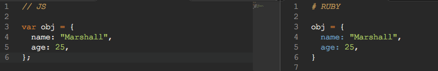

I remember when I saw my first javascript object, It was just after I had finished up the codeacademy lessons on Python. I thought to myself "something isn't right here." And to be fair, I might have been slightly on point. I mean, this is a language that has a lot of silly and broken things about it (why in God's good grace does []==[] evaluate to FALSE!?), and midst the flurry of curly brackets and semicolons you begin to wonder what makes sense and what doesn't.
However, after getting some time to familiarize myself with the javascript object, it began to dawn on me that it actually makes a good bit of sense to construct objects in this way (aka the way we build hashes in ruby) -- after all, on the face of things, an object is merely a set of instance variables (keys) with associated values. (I understand that there's more to an object than mere attributes, but my focus for this blog post is not going to delve in the world of prototyping javascript object behaviors -- that is for another day!)
Notation-wise, the coding looks all very similar. A javascript hash, instantiated in literal notation, is pretty much done the same way you would instantiate an empty hash object in ruby -- var obj = {}; and hash = {}, respectively.
As far as keys are concerned, the two still perform almost identically:
What then, is the difference between a Javascript object and a Ruby hash? Very few, actually. The ruby hash we created about is an instance of the Hash object in ruby, and while the Hash *class* will see many differences from a Javascript object, the fact of the matter is that both the ruby hash and the JS object contain key-pair values, very easily accessible (nothing in a javascript object is 'hidden' from anything outside of it -- unlike a ruby class, where instance variables (properties of the class) cannot be read unless explicitely permitted)
Conceptually, there's a lot of similarities. As far as the behaviors of an object versus a hash, you'll find that the Ruby hash is much, MUCH more flexible than the javascript object. Javascript has very few object methods it can employ. In fact, there are so few native to JS, that I can list them here:
Notice how little we can do to this thing? Clearly Javascript does not want us to parse through an object like we can a Hash -- no sorting, no selecting of certain elements based on a block expression, nothing. And in this sense, we discover that a Javascript object is *not* always meant to be treated like a hash -- many times, the object is instantiated by it's constructor function, performed when someone fills out a certain set of data, or form, and submits it. Javascript is not the best at manipulating that kind of data in a fluid way -- one would honestly be better off running a for loop through thr object, outputting each key/pair value into an array, manipulating the data, and then reinserting it into a new object. Seems like a lot of work for even seemingly simple sorting functions. It kind of makes one realize how spoiled we can become from our highly abstracted and powerful programming languages like Ruby and Python!
But hashes are! Perhaps, when we start bridging the gap between front-end and back-end, feeding data from user input to our back-end programs, we'll begin to see how similar the two really are. I'm excited to see how that process will begin once we start the onsite.
Back to Top